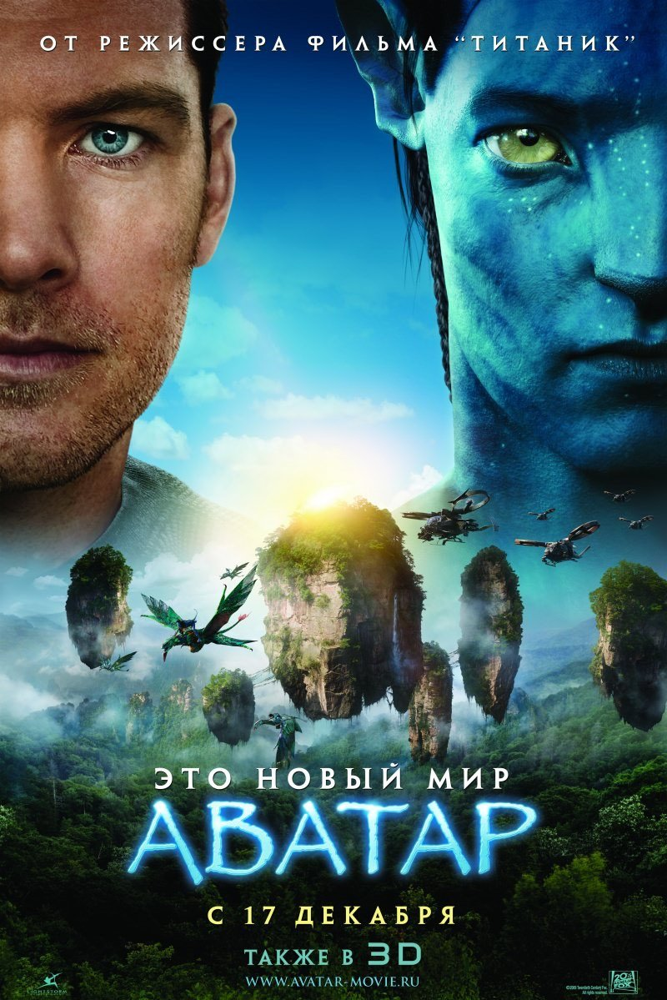

Когда засуха, пыльные бури и вымирание растений приводят человечество к продовольственному
кризису, коллектив исследователей и учёных отправляется сквозь червоточину (которая
предположительно соединяет области пространства-времени через большое расстояние) в
путешествие, чтобы превзойти прежние ограничения для космических путешествий человека
и найти планету с подходящими для человечества условиями.
Когда засуха, пыльные бури и вымирание растений приводят человечество к продовольственному
кризису, коллектив исследователей и учёных отправляется сквозь червоточину (которая
предположительно соединяет области пространства-времени через большое расстояние) в
путешествие, чтобы превзойти прежние ограничения для космических путешествий человека
и найти планету с подходящими для человечества условиями.
 Вскоре после отмщения за смерть жены и сына, Макс Рокатански покинул ряды «Основного силового
патруля» и уехал в глушь, где скитается в одиночестве, пока мир медленно падает впоследствии
нефтяного кризиса и глобальной войны. Не имея ничего, кроме своей машины «Перехватчик», Максу
предстоит научиться, как выжить в пост-апокалиптической пустоши и сражаться с жестокими, безжалостными
воинами, которые населяют её.
Вскоре после отмщения за смерть жены и сына, Макс Рокатански покинул ряды «Основного силового
патруля» и уехал в глушь, где скитается в одиночестве, пока мир медленно падает впоследствии
нефтяного кризиса и глобальной войны. Не имея ничего, кроме своей машины «Перехватчик», Максу
предстоит научиться, как выжить в пост-апокалиптической пустоши и сражаться с жестокими, безжалостными
воинами, которые населяют её.
 Жизнь Томаса Андерсона разделена на две части: днём он - самый обычный офисный работник, получающий
нагоняи от начальства, а ночью превращается в хакера по имени Нео, и нет места в сети, куда он не смог
бы дотянуться. Но однажды всё меняется — герой, сам того не желая, узнаёт страшную правду: всё, что его
окружает — не более, чем иллюзия, Матрица, а люди — всего лишь источник питания для искусственного интеллекта,
поработившего человечество. И только Нео под силу изменить расстановку сил в этом чужом и страшном мире.
Жизнь Томаса Андерсона разделена на две части: днём он - самый обычный офисный работник, получающий
нагоняи от начальства, а ночью превращается в хакера по имени Нео, и нет места в сети, куда он не смог
бы дотянуться. Но однажды всё меняется — герой, сам того не желая, узнаёт страшную правду: всё, что его
окружает — не более, чем иллюзия, Матрица, а люди — всего лишь источник питания для искусственного интеллекта,
поработившего человечество. И только Нео под силу изменить расстановку сил в этом чужом и страшном мире.

Джейк Салли — бывший морской пехотинец, прикованный к инвалидному креслу. Несмотря на немощное тело,
Джейк в душе по-прежнему остается воином. Он получает задание совершить путешествие в несколько световых
лет к базе землян на планете Пандора, где корпорации добывают редкий минерал, имеющий огромное значение для
выхода Земли из энергетического кризиса.